2010年9月30日(木)はまだまだ続きます。
フィヨルドツアーを終えてベルゲンに帰ってきた後、休む暇もなく飛行機でストックホルム（スウェーデン）に向かいます！
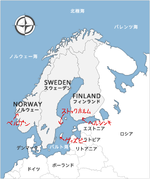
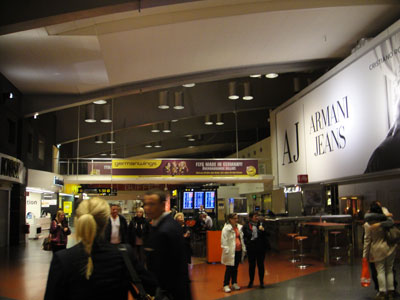
スウェーデンのストックホルム・アーランダ空港に到着！
着いたのはなんと２３時！
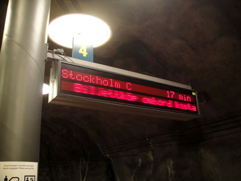
アーランダ空港からストックホルム市内へは
アーランダエクスプレスで移動します。
ストックホルムは地下鉄もそうでしたが、
到着までの残り時間が表示される形式でした。
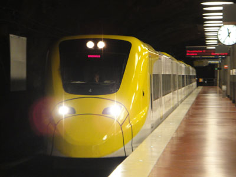
アーランダエクスプレスが到着～。
他の交通機関だと４０分以上はかかるのに、
これだと２０分で着くという優れものなんです。
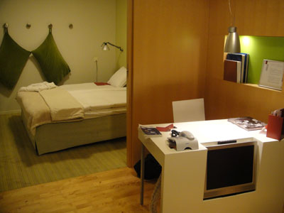
ストックホルムから地下鉄で２駅の場所に
宿泊するホテル・ビルエル・ヤールがあります。
地下鉄の駅を出てからものすごく迷い、
やっとの思いで辿り着きました。。。
2010年10月1日(金)
旅行５日目からは拠点をスウェーデンに移して観光を続けます。
この日は『魔女の宅急便』の背景の参考にされたと言われる、ゴットランド島のヴィズビー市街へ日帰り旅行してきます！
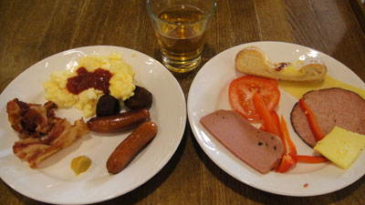
ビルエル・ヤールでの朝食。
もうこの朝食の写真も見飽きましたね(^^;。
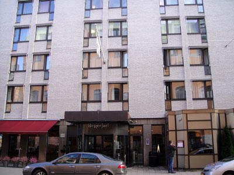
一見立派そうに見えて、同じような建物が多くて
この後も何度か道に迷いました。
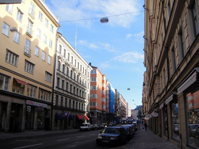
ホテルの近所の街並み。
ビルに高さ制限が設けられているようですね。
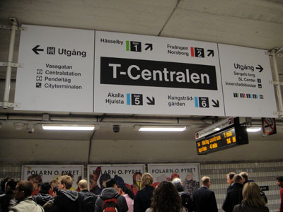
まずは地下鉄でテー・セントラレン駅へ向かいました。
東京の大手町駅みたいな駅でした。
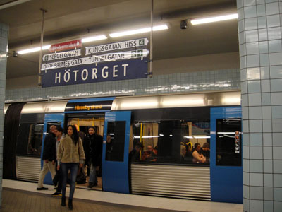
地下鉄駅から歩いてストックホルム中央駅へ向かうはずが、
間違って地下鉄の隣駅に来てしまいました(^◇^;)。
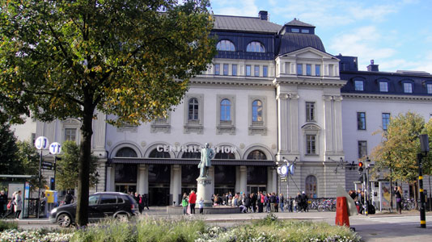
気を取り直して、ストックホルム中央駅に到着！
やっぱり中心の駅はどこも立派です。
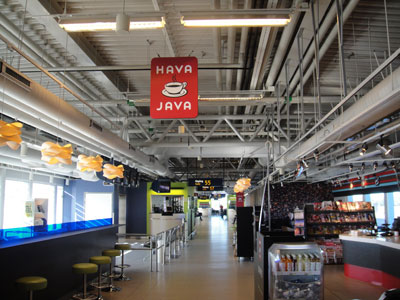
昨晩乗ったアーランダエクスプレスに再び乗り、
アーランダ空港へ。
国内線乗り場は国際線と違ってやたらとのどかです。
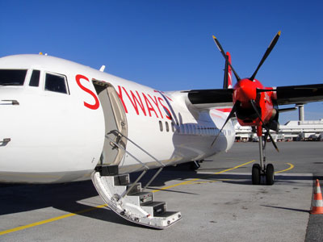
ヴィズビィへ向かう飛行機は何とプロペラ機！
定員５０人くらいのとても小さな飛行機でした。
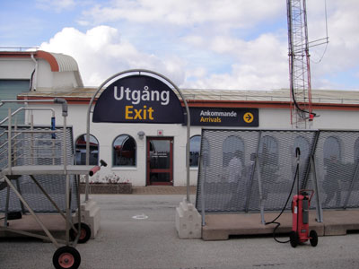
ヴィズビー空港に到着～。
っていきなり外を歩かされるとは…びっくり。
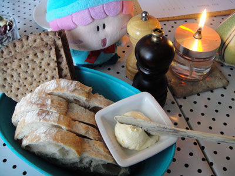
タクシーでヴィズビー市街へ移動後、
Bakfickenでお昼ご飯。
何と先客に日本人がいて驚きました。
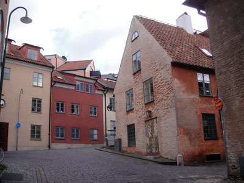
確かに『魔女の宅急便』に出てきそうな建物ばかり！
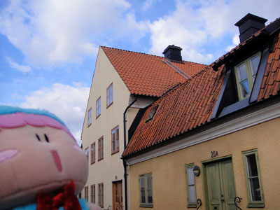
「あの屋根裏に住んでみたいでしゅ～」
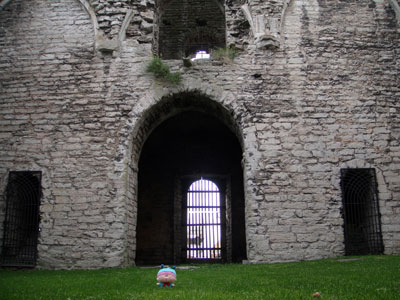
ゴットランド博物館で鍵を借りると（有料）、
街の各地に残る教会廃墟の中に入ることが出来ます。
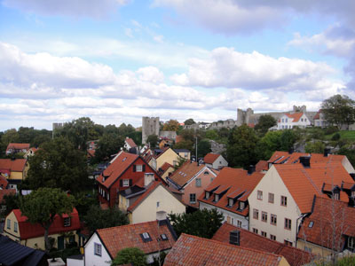
とある教会廃墟の屋上から眺めた景色。
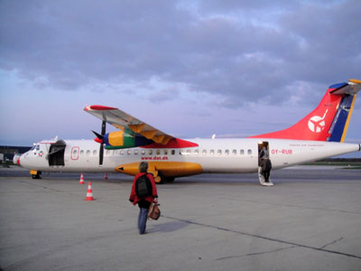
ゴットランド島観光はあっという間に終わり、
またもやプロペラ機でストックホルムへと引き返します。
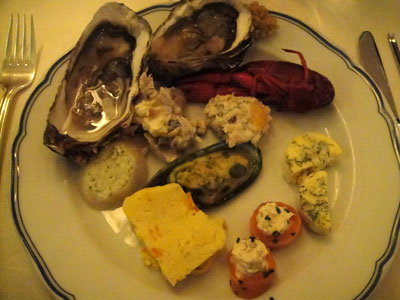
夕食はレストラン・ヴェランダにてビュッフェでたくさん食べました。
この期間は料金が高いらしく、何と一人１万円！！（高すぎT-T）
2010年10月2日(土)
旅行は慌ただしく進み、スウェーデン観光２日目にして、この日がスウェーデン滞在最後となります。我ながら本当に詰め込み過ぎな計画だなぁと思います(^^;。
スウェーデン最後の観光は、中世の香りの残るガムラ・スタン（ストックホルム旧市街）を歩きます。
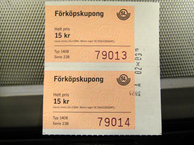
地下鉄の24時間チケットが昨日で切れてしまったので切符を購入。
駅では売っていなくて、駅前のセブンイレブンまで
買いに行かされるとは…。
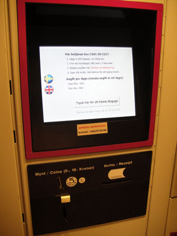
ストックホルム中央駅のコインロッカーは最新式。
ここに大きなスーツケースを預けました。
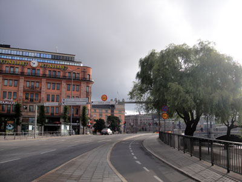
中央駅からガムラ・スタンへは徒歩で。
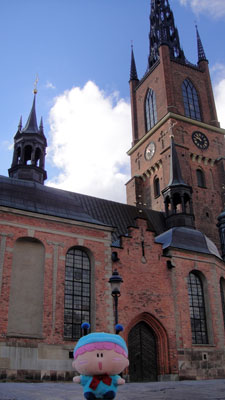
まず最初はリッダーホルム教会。
背が高くて全景を写真に収めるのが大変。。
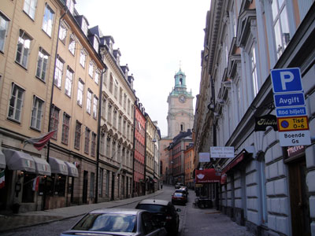
石畳の道路から中世の香りをとても感じますね。
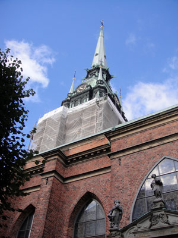
ドイツ教会…は覆いがかけられていてちょっと残念。
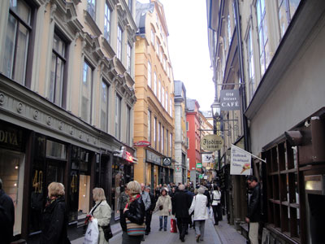
繁華街のヴェステルロングガータン通りは
お店が多くてとてもにぎやかです。
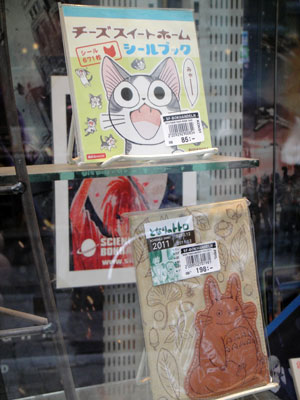
マンガ専門店を発見！
思わずスウェーデン語の『ケロロ軍曹』を買ってしまいました。
（残念ながら『ミルモでポン！』はありませんでした）
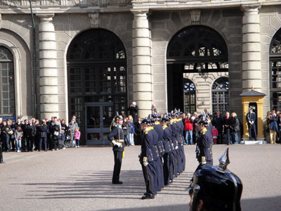
王宮で衛兵の交代式が行われていました。

再び中央駅へ戻る途中、ゲームショップに入ってみました。
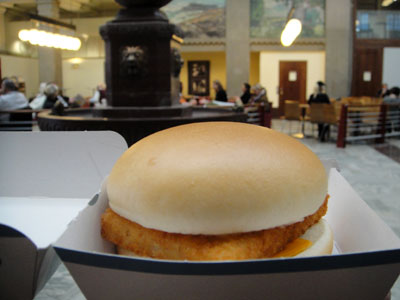
中央駅の中にあるマックでフィレオフィッシュを購入～。
向こうでは「マックフィッシュ」と言うようです。
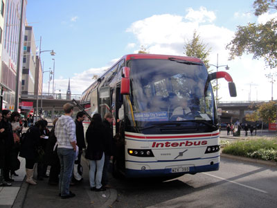
スーツケースをコインロッカーから取り出し、
シリヤライン乗り場のバッタムン港へ
シャトルバスで移動～。
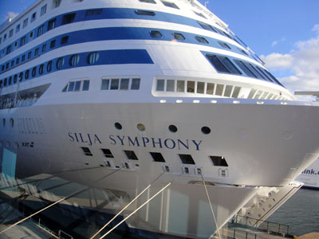
まるでタイタニック号のような巨大なシリヤライン！
行き先はフィンランドの首都ヘルシンキ。
東京～名古屋間の距離を一晩かけて移動します。
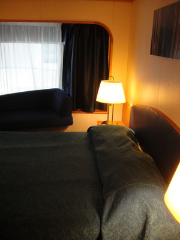
デラックスルームの客室はかなり豪華です！
無料で飲めるウェルカムドリンクも何本か
冷蔵庫に入っていました！
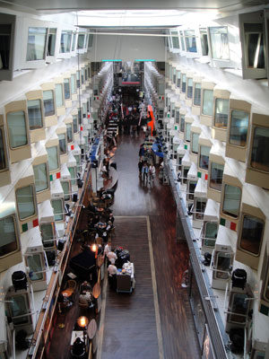
船内中央の吹き抜けプロムナード。
両側にいろんなお店が並んでいました。
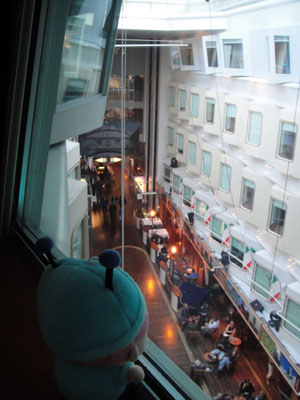
「良い眺めでしゅ～」
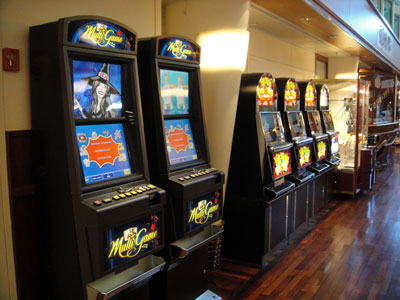
スロットマシーンなどのゲーム機も
あちこちにありました。
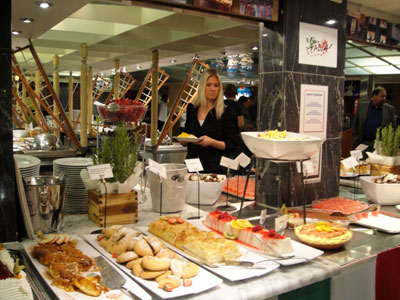
今晩も夕食はビュッフェで食べまくり！
(2010/10/9)